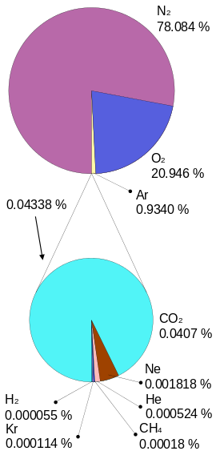
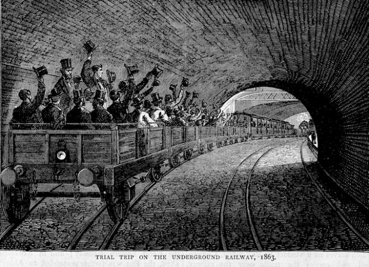

Mosquito
A mosquito is a very small fly. You know when there is a mosquito near you, because you hear a noise that you don't like: zzz-zzzzzzz. Mosquitoes bite you and drink your blood.
A mosquito comes into your house, and flies towards you. How does it know where you are?
In the atmosphere, there are 3 main gases. Nitrogen (N), oxygen (0), argon (Ar) make up 99.95% of the air around us. Carbon dioxide (CO2) makes up only 0.04% of the atmosphere, but it makes up 5% of the air you breathe out. Mosquitoes can smell carbon dioxide. The mosquito will fly towards where the air is rich in carbon dioxide, then it will smell your skin.

You see mosquitoes in your house, but most mosquitoes live outside: in the street, in forests, everywhere where there is water. Outside, mosquitoes drink the blood of all kinds of birds, and some kinds of birds eat mosquitoes.
In 1859, Charles Darwin wrote "On The Origin of Species". He wrote about how one kind of animal can change into another kind. He thought this process is very slow.
In London, in 1863, the first metro line was opened. Humans made a tunnel 8 km long under the ground, where no birds live. Charles Darwin lived in Downe, 27 km from the new Farringdon underground station.

Today, the London underground railway system is 402 km long. In the tunnels, there are humans and rats and mice... and also mosquitoes. The tunnels are warm all year round, even in winter. Mosquitoes in the tunnels can be active 12 months every year, and there are no birds to eat them.
A mosquito starts as an egg. The mother mosquito lays eggs on water. The egg becomes a larva. The larva eats microorganisms in the water, and then becomes a pupa. The pupa does not eat anything. The pupa goes up to the top of the water, and changes into a mosquito. The mosquito drinks blood, and then lays eggs. The cycle from egg to mosquito to egg takes 2 weeks.

Mosquitoes have been in the London underground for over 150 years. They have changed. They are a new kind of mosquito. They cannot live outside. Mosquitoes from outside cannot live in the underground.
Darwin did not think that humans make new places where new kinds of animals can live. He did not know that the process can be very quick.